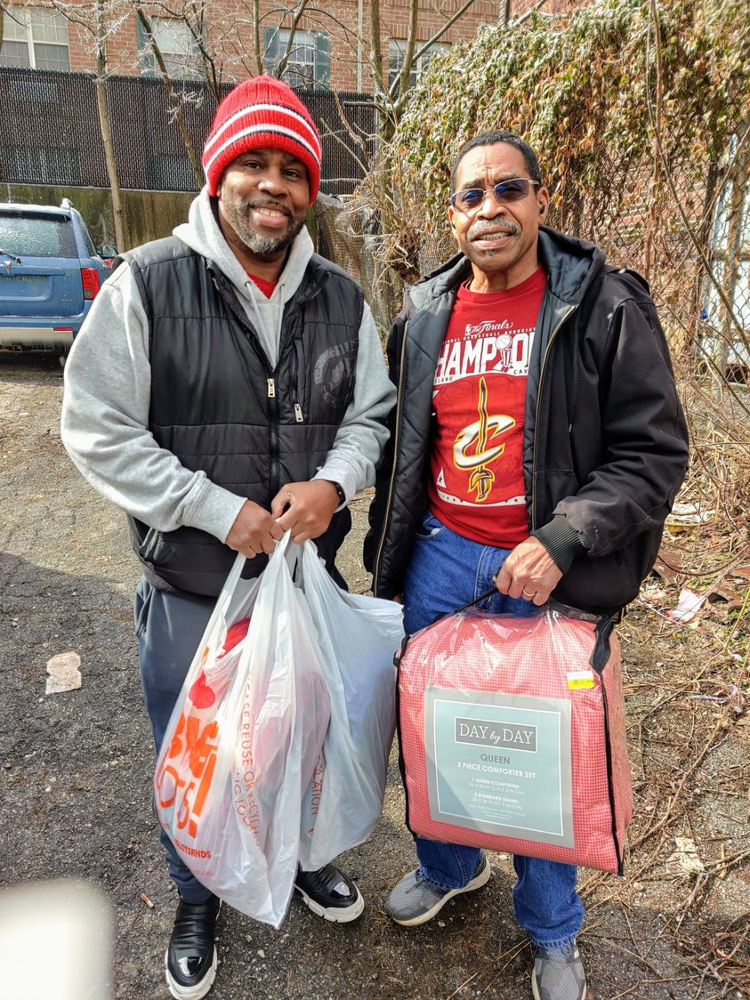

Timeline photos
Do you ever think that maybe it wasn't God who made us in his image, maybe it was US that made God in OUR image?
As I run for mayor over the next year I have made a pact with myself to try to be as positive and hopeful as I can possibly be. At the end of the campaign I want you to say: "I'm glad Sage ran for mayor because he inspired me to try to be a better person and to think better of my fellow humans."
You have transformed me. You have shown me that the human race is mind-blowingly good and kind and generous and compassionate. It's only when we clump up into tribes and churches and political parties that we become our lesser selves.
Take these 2 men. The man on the right is the Pastor of his church. The man on the left is the Deacon of his church. They came by several weeks ago to bring our homeless neighbors blankets. They declared right then and there that they were adopting our little village.
I was so overwhelmed by their kindness and goodness. I'm short of breath right now thinking about it.
But here's the thing... this isn't unique. It's not like these two men were the first people to stop by ever. People come by constantly. People constantly bring food and items and supplies. I couldn't possibly keep track of them all. They often come when I'm not there.
More than anything, the work I do, I do it for you. You deserve more heroes in your life that are as good and kind as you.
But, as you likely know, I'm not perfect. I'm as least as flawed as the average human... I'm probably MORE flawed than average. So I get angry at a cold and callous system that clearly does not care whether fellow Akron citizens starve, freeze or overdose on their streets. If anything, I think they are glad to see them go so they can back to the work of making a bizarre dystopian urban bedroom community that feels a little too much like the Capitol in the Hunger Games. (See, there I go again.)
But because you are who you are, I know you will forgive me. You always forgive me. You always just bring kindness and patience. You forgive me even when I don't forgive myself. And that, my friends, is why I think more and more that it was US that created God in OUR own image. Our goodness and love and kindness is so beautiful and wonderful. Sometimes it's so overwhelming that I can't even look it straight in the eye.
I want you, more than anything, to know this about yourself. I need you to believe in your goodness and kindness. When you believe the truth in yourself you will then be able to believe it in your fellow humans. And then all becomes possible. TOGETHER WE CAN CHANGE THE WORLD.